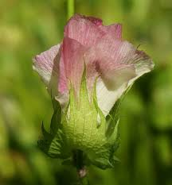
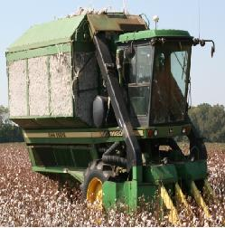
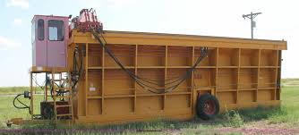
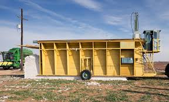

One of the great advantages of being in one place for a bit of time (in this case the winter season) is that you get to know the other folks in the park and they quickly become your friends, or in many cases .. your family.
Last week a lot of “the family” took a tour of one of the many local cotton farms – The Caywood Family Farm just east of Casa Grande.
Being that we lived in central Ohio for 30+ years, we were somewhat familiar (but not well versed) in the farming of wheat, soybeans, and corn. This tour provided us with TONS of information about the cotton business. We’ve seen the cotton bales and modules in fields along the road and we’ve become well aware of the cotton transport trucks, but this tour really opened our eyes to the entire process.
Some of the pictures in this post were taken while on the tour, others were taken at fields or at nearby gin, and then a few were pulled off the internet to round out the post.
Nancy Caywood was our tour guide and shared with us that she is the third generation of the Caywood family to farm that property.
Her son Travis is now actually running the farm and Nancy and her helper Al handle the tour operation.
You can learn more about Nancy and the rest of the crew by following this link.
We learned a lot during the 3 hour tour about the cotton farming business and how hard it is to “make it” given the dire water situation here in central Arizona along with all the government regulations on when they can plant, when (and if) they can have water, how they are required to control dust, when they must have the crop out of the ground and so many more “must” and “must not” regulations.
Here are some of the interesting facts we learned;
- Water rights are first given to the;
- Native Americans then;
- City and County Governments then;
- Industry then;
- lastly to the farmers (if there’s any left)
- A typical round “module” of harvested cotton weighs about 5000 pounds
- The rectangular modules weigh about 15,000 pounds
- The harvest weight will be about 2/3 seed and 1/3 cotton lint
- Crops can be planted as early as late March (weather dependent)
- Crops MUST be off the field by mid-February (regulation)
- Crops generally get picked twice each season before the plant is cut and turned under
- Between field preparation, planting, fertilizing, picking, 2nd picking, cutting, tilling, leveling, and other necessary operations the field is crossed by tractor 15 times or more during a typical season
- A typical John Deere 4 row picker costs about $650,000 (new)
- Central Arizona farmers typically grow either Pima (Egyptian) Cotton or Upland Cotton
- The cotton “modules” are trucked to the local cotton gin for cleaning and separating the seed from the cotton lint and packaging to be transported to storage and ultimate sale to textile mills
- Cotton or cotton seed is used in; clothing, animal feed, pharmaceutics, explosives, adhesives, oil, toothpaste, currency and hundreds of other applications
- 95% of the cotton grown in the U.S. is exported to the Pacific Rim (China, Thailand, Vietnam, Malaysia, Singapore and others)

The cotton seed is planted in the spring after the final frost. The seeds begin to germinate and pop their heads out of the ground about a week later. Cultivating is done to minimize weed and grass growth that would otherwise choke out the cotton plant.
The crops are watered by flood irrigation. The ditches are filled with water from either; on site wells or from canals coming to the area from the Central Arizona Project. The CAP gets it’s water from Lake Mead. Yes, that’s right … central Arizona gets it’s water from Lake Mead (nearly 300 miles north of Phoenix). The opening and closing of the irrigation gates to the fields are controlled by government agencies with hefty fines to the farmers should they be caught abusing their privileges.

About 2 months after planting, buds begin to form on the plant & in another 3 weeks or so the blossoms open with pale yellow flowers.

In a few days the petals change color to dark purple. A few days more and the flower withers and falls leaving the BOLL that contains the seeds and moist fibers. Eventually, as the seed matures the BOLL bursts open exposing the fluffy bounty. The cotton now is ready to harvest right after it is sprayed with a defoliant. This allows the leaves to fall thereby producing a cleaner cotton harvest.
Now the boll is open and ready for the picker
Here’s a typical hopper style picker. This two-row picker collects the cotton in the large hopper in the back. When it’s full, the picker then dumps the hopper into a large rectangular Module Builder

Here’s Nancy showing us the head of their two-row picker. This picker pulls the cotton out of the plant boll and places it up into a hopper in the back. The loose cotton is then “dumped” out of the picker into a large rectangular cotton module builder that can then be transported to the gin for processing.

Here’s one of the picker heads showing the tall row of spindles (silver horizontal spikes). The spindles are about the size of your baby finger and rotate (very fast) and have little teeth on them that catch and pull the cotton off the plant. At the same time, the vertical shaft that the spindles are attached to is also turning and moving the spindles under a brush to remove the cotton so it can be blown up into the hopper at the rear of the picker


Once the cotton is picked it needs to get to the gin for processing .. right? So the farmer dumps the cotton from the picker into what is called a Module Builder.

The module builder is basically a large metal box that is open on the top and bottom, one solid end and a gate on the other end. It is usually hooked to a tractor to not only move it around the field, but also to supply the hydraulic power for the ram to pack the cotton tightly

The walls of the module builder are sloped being wider at the bottom than the top so that the builder can be pulled off the module easily
Here’s a You Tube video I found online that shows how the Module Builder works
After the module is packed, it’s time to pull the builder away and then the transport truck comes to pick up the module and take it to the gin for processing

This cotton transport truck drives onto the cotton field, backs up to the end of the packed cotton module, turns on the chain drive track in the floor of the trailer, and backs up …. at the same speed that the chain drive runs. This picks up the module .. one foot at a time .. and neatly deposits it into the truck trailer where it’s then taken to the cotton gin for processing.


The newer and larger cotton pickers can produce their own round modules
The round modules are dropped in the field by the picker and then a very large fork-lift type of truck goes out and picks them up and sets them onto the flat bed trailer for delivery to the gin.
This picture below shows round modules arriving at the gin and being weighed

Look closely below (right side of picture) and you’ll see the tractor placing the round modules onto the conveyor to head into the gin for processing


Unfortunately, we can’t go into the gin to see the operation first hand (safety issues), but I found this YouTube video online that explains the process very well. Although this video was done in Australia, the process is very similar if not identical to how it’s done here in Arizona.
The picture below shows the large piles of cotton seed that will be processed further for things like; cottonseed oil, fertilizer, animal feed, soap, glycerin, cosmetics, rubber, and a lot more that we use every day.

All in all it was a great day and we thank Nancy Caywood for the very informative tour. Now when we drive throughout Arizona and see all the cotton farms, we’ll have a new appreciation for the crop and the people that work so hard to produce it, especially given the limited water supply.
To learn more about Caywood Farms, you can visit their web site at www.caywoodfarms.com or find them on Facebook at https://www.facebook.com/caywoodfarms/
Thanks for riding along with us. Visit our You Tube channel @ herbnkathyrv to see some of the videos we’ve produced
And remember … not all who wander are lost – J. R. R.Tolkien